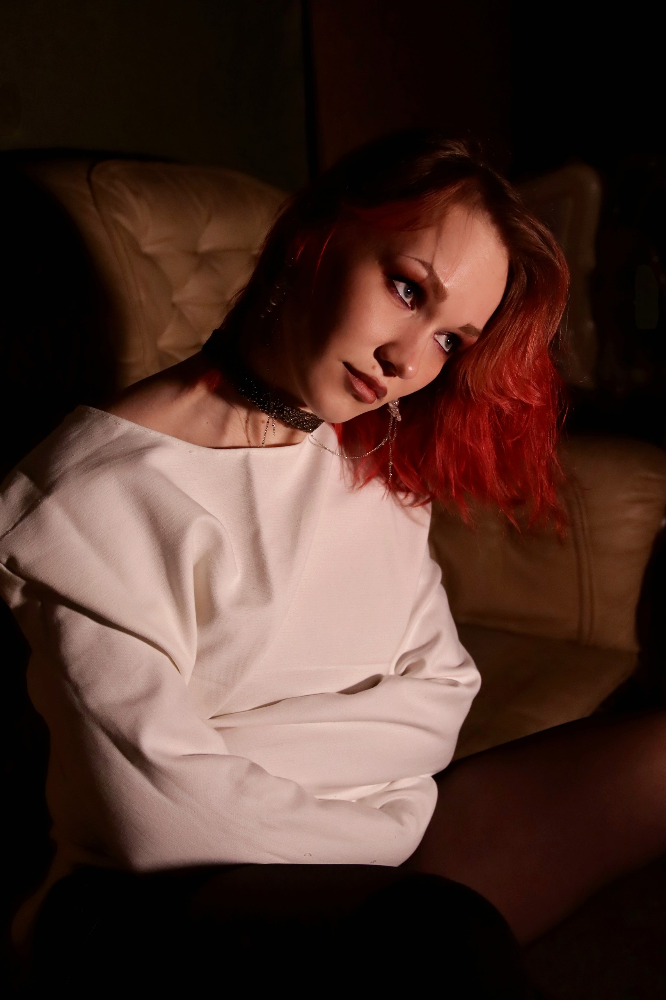

«Я не создаю контент.
Я создаю настроение, в котором ты остаешься наедине с собой».
Эстетика


Нажми на фото, чтобы изменить свет

Independent artist · Official website
Песни о том, что скрыто за кадром

«Я не создаю контент.
Я создаю настроение, в котором ты остаешься наедине с собой».
Нажми на фото, чтобы изменить свет